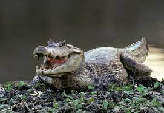

Habitad: CAIMAN COMUN O NORMAL

Este género está presente en América Central y del Sur.
se encuentra en América Central y partes de la mitad norte de América del Sur en altitudes de hasta unos 800 m (2600 pies). Por lo general, se encuentra en agua dulce, pero también visita ocasionalmente el agua salobre de los estuarios.
Tiene diferentes hábitats, incluidos humedales y ríos y arroyos de movimiento lento. [6] El caimán yacare ( Caiman yacare ) se encuentra en la parte central del sur de América del Sur, particularmente en la región del Pantanal ,
el área de humedales tropicales más grande del mundo, que se inunda estacionalmente por el río Paraguay .
El caimán de hocico ancho ( Caiman latirostris ) se encuentra en el centro y este de América del Sur, su área de distribución incluye el sureste de Brasil, Bolivia, Paraguay, Uruguay y el norte de Argentina, dentro de los sistemas de drenaje de los ríos Paraná , Paraguay, Uruguay y São Francisco .
Caracteristicas
Los caimanes de anteojos y hocico ancho se caracterizan por tener una protuberancia ósea en el puente de la nariz justo debajo de los ojos.
- El caimán yacare es la especie más grande del género, alcanzando una longitud adulta promedio de 2,5 a 3 m (8,2 a 9,8 pies),
- el caimán de hocico ancho es el más pequeño, más típicamente mide de 1,8 a 2 m (5,9 a 6,6 pies) para los machos y de 1,2 a 1,4 m (3,9 a 4,6 pies) para las hembras.
- Los caimanes son similares a los caimanes en morfología, pero difieren en que tienen placas óseas, conocidas como osteodermos , enterradas en la piel en la parte inferior.
- Tienen sangfre fria y necesitan de la luz solar para calentarseg
regresar al menu
menú